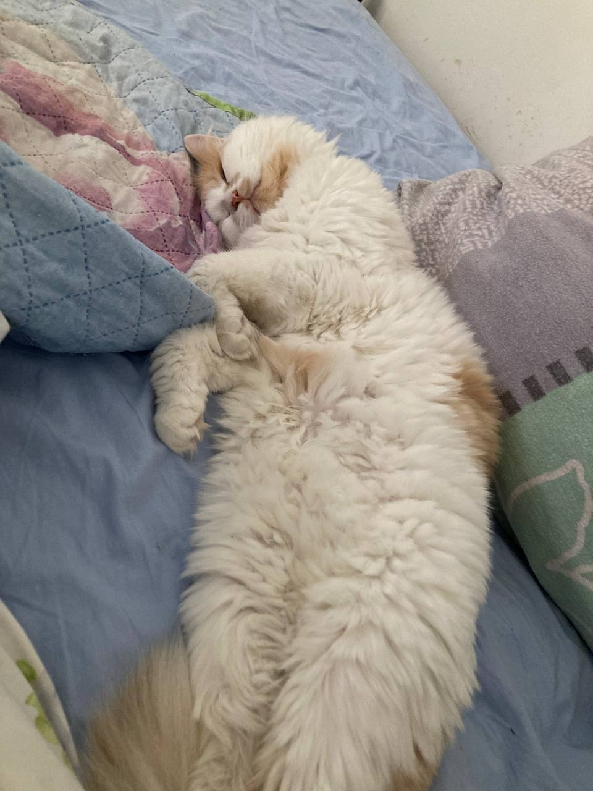

I am Oleksandra Kudinova, a Ukrainian girl with a deep-rooted passion for creativity and innovation. Born and raised in Ukraine, I have always been fascinated by the intersection of art and technology. My diverse skill set includes graphic design, coding, and storytelling, which I love to combine to create captivating experiences. With an insatiable curiosity and a thirst for knowledge, I continuously explore new fields, from interactive media to virtual reality. Through my work, I strive to push boundaries, inspire others, and make a positive impact in the world. And i like cats.
Here's my lovely cat Felix
